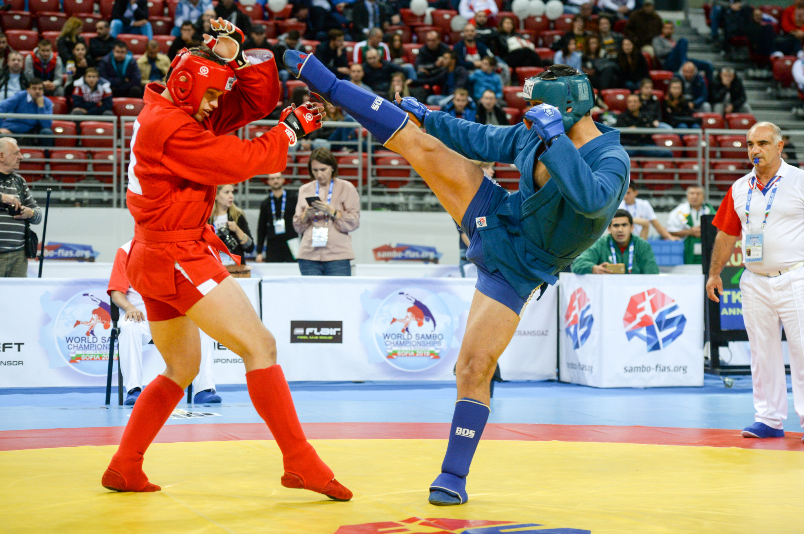

SAMBO |
|
|
Home Judo Sambo |
SAMBO is a martial art and combat sport developed and used by the Soviet Red Army in the early 1920s to improve their hand-to-hand combat abilities.The sport is similar in many ways to judo and jujutsu but also incorporates different types of wrestling and various self-defence systems.The name "SAMBO" derives from the Russian acronym SAMozashchita Bez Oruzhiya, which literally means "self-defence without weapons".Soviet martial arts expert Vasili Oshchepkov is credited as one of the founding fathers of SAMBO.Born into a family of exiles in 1893, Oshchepkov also played a key role in introducing judo into the Soviet Union.An intelligence officer during both Tsarist and Soviet periods, he was educated in Japan and later returned there to work in the 1920s.
Lets see how it looks like  |
Created by Germans,2023 | |